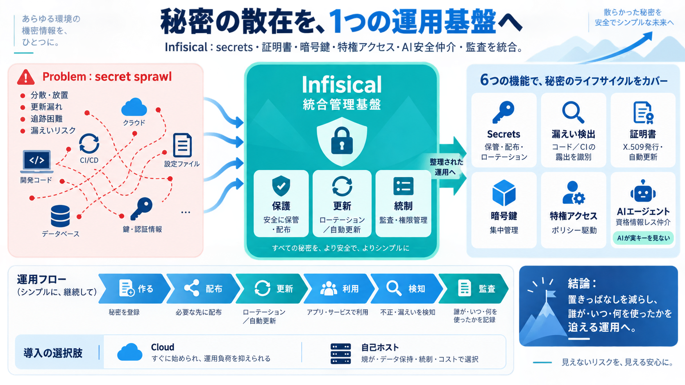

Infisical vs. Hashicorp Vault -- Secrets Management Comparison
# Infisical vs. Hashicorp Vault -- Secrets Management Comparison ## Channel: Infisical 1.03K subscribers 28 likes ### D…

# Infisical vs. Hashicorp Vault -- Secrets Management Comparison ## Channel: Infisical 1.03K subscribers 28 likes ### D…
Second is architecture. Vault requires its own operational infrastructure. Raft consensus, storage backends, unsealing m…
Vault Enterprise is the paid, self-managed tier. On top of the core features, it adds: Namespaces (isolated tenants wi…
Infisical is an open-source identity security platform focused on developers and engineering teams. Most teams adopt Inf…
is error prone to build by hand. From Agent Vault to Agent Proxy Infisical first took on credential exfiltration in Apri…